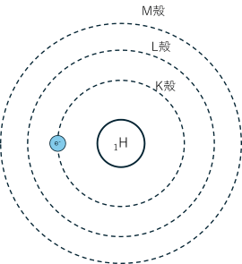
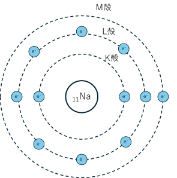
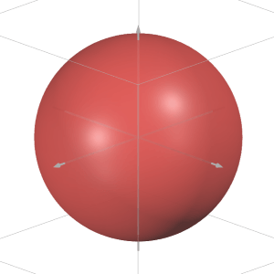
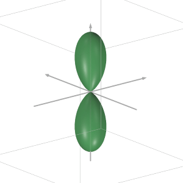
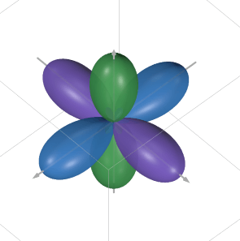
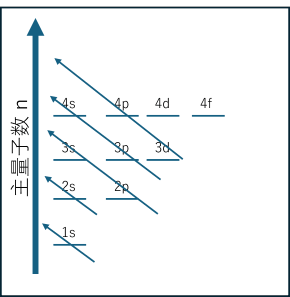
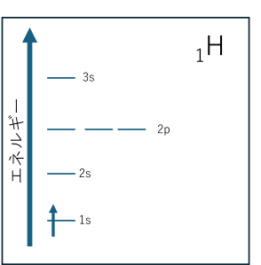
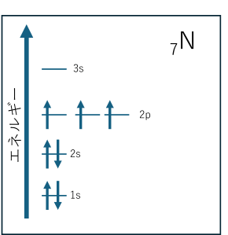
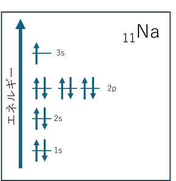

高校の化学では原子に入る電子はK, L, M, N...殻に分けて考えられる。
そして、n番目の殻には
個の電子は入る。
例えば以下の水素はK殻に1個、ナトリウムではL殻まで完全に充填され、M殻に一個入る。


大学化学では電子がどこに充填されているかは、電子配置を軌道の種類ごとに記述する。
これを理解するためにはまず、電子がどう存在するかは量子力学によって示されることを理解する必要がある。
以下のシュレディンガー方程式により電子の状態を記述することができる。
この式がどう導かれたか、計算したのか、これらはいったん無視した方が良い。終わらないので。
シュレディンガー方程式を解くと3つの整数（量子数）が得られる。
主量子数、 方位量子数、 磁気量子数である。
この3つの量子数は電子の状態を決定する。
は電子がどの殻に入るかを決定する。1ならK殻、2ならL殻、と大きくなるほど外側の殻を示す。
方位量子数は電子がどの軌道に入るかを決定する。
シュレディンガー方程式の結果から、軌道の形が定まり、 は s 軌道、 は p 軌道、 は d 軌道、 はf軌道を示す。
磁気量子数
は軌道の向きを決定する。
例えば なので p 軌道には3つの軌道が存在する。
この3つの p 軌道はエネルギーが同じでありこれらを「縮退した軌道」という。
以下に示した s 軌道、 p 軌道の形を見ると s 軌道は球対称、 p 軌道は二つの葉を持つ。

s 軌道

p 軌道

p 軌道3つ
さらに量子数にはもう一つスピン量子数 がある。これらの数値を組み合わせることで電子の状態を決定することができる。
例えば水素の電子は 、 、 、 (どちらか一方) である。
これにより s 軌道の電子が1つ入る。これを またはと表す。
電子が2つになるとスピン量子数は平行スピンと反平行スピンの2つが存在すると考えられる。
しかし、「2つ以上のフェルミ粒子（電子や陽子、中性子など）は、同一の量子状態を同時に占めることはできない」という
「パウリの排他原理」により同じ主量子数、方位量子数、磁気量子数に同じスピンの電子は入ることができない。
そのため、同じ軌道にはスピンの向きが逆の電子しか入ることができない。
よって一つの軌道には最大で2つの電子しか入ることができない。
さらに電子が増えて窒素原子について考えると、7個の電子を充填する必要がある。
電子の充填はエネルギーが低い軌道から順に行われる。一般的には以下の図のように 1s > 2s > 2p > 3s > 3p >...の順序で行われる。
3p 軌道の次に埋まるのは 4s 軌道で 3d 軌道には入らないことに注意する。

これによると、下の図のように窒素原子の電子配置は
となる。
実際の水素、窒素、ナトリウム原子の原子軌道は以下の図のようになる。
窒素の原子軌道を見ると 2p 軌道に電子が3つ入っているが、3つの軌道に一つずつである。
これは「同じエネルギーの軌道（縮退した軌道）に電子が入る場合、同じスピンをできる限り多くする」という
「フントの規則」によって電子が一つずつ入る。


